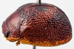
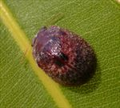
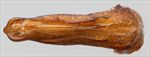
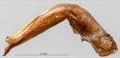
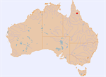

Click on images to enlarge


Male, Jowalbinna Station, Laura, N.E. Queensland


Male, Jowalbinna Station, Laura, N.E. Queensland


Aedeagus, dorsal view (Jowalbinna Station, Laura, N.E. Queensland)


Aedeagus, lateral view (Jowalbinna Station, Laura, N.E. Queensland)


Distribution
Name
Trachymela sp. Ta131
Reference specimen
2005-227, Jowalbinna Station, Laura, NE Queensland.
Adult Description
Length: ♂ 5.3 mm (n=1), ♀ unknown.
[Description based on the single male specimen available]
Colouration:
- Head: Uniformly mid-brown, labrum straw-brown, mandibles tipped dark brown or black; antennae straw-brown throughout.
- Pronotum: Brown, concolorous with head.
- Scutellum: Brown, concolorous with or fractionally darker shade than pronotum, with a slightly darker border.
- Elytra: Brown, concolorous with pronotum, with a black quadrate area straddling the elytral summit, area between scutellum, humeral callus, and summit with black verrucae giving a somewhat chequered appearance; posterior third of elytral disc similarly studded with small black verrucae with dark brown interstices, the area of dark brown interstices extending anteriorly to about humeral callus but leaving a broad band of prominently lighter brown colouring (concolorous with pronotum) adjacent to the quadrate black patch at summit to its rear and sides; punctures fractionally darker shade than interstices throughout, particularly noticeable in this paler region; humeral callus very slightly darker than surrounding area.
- Venter & Legs: Mid-brown with margins of thoracic ventrites darker in shade; inside surface of elytral epipleura brown.
- Cuticular Wax: Light scatter of light brown cuticular wax leaving black areas prominently visible.
Morphology:
- Shape: Dorsal surface almost evenly curved throughout when viewed laterally, with discontinuity between pronotum and head small, greatest height well in front of middle of elytral margin.
- Head: Punctures moderately large (pd ≈ 2–3× ef) and relatively evenly and densely distributed. Antennae short (AL/BL: ♂ 38.5%, ♀ unknown), filiform.
- Pronotum: Almost evenly curved transversely, foveal depression barely discernible, surface of marginal area slightly elevated; discal area with surface smooth and only very slightly uneven, puncturation clearly impressed, individual punctures similar in size to those on head but more uniformly sized, evenly distributed and relatively dense (spacing ≈ 1.5–2.5 pd), becoming much more coarse at lateral margins. Front margins join lateral margins in a smoothly rounded right-angle, with lateral margin curving smoothly and initially very gradually then more sharply towards rear margin, broadest just in front of posterolateral angle.
- Scutellum: Surface smooth, punctured, punctures similar in density and size to those on adjacent surface of pronotum, but less deeply impressed.
- Elytra: Surface evenly to very slightly unevenly curved with a slightly elevated and relatively smooth (and black) quadrate area around the elytral summit where punctures tend to be less deeply impressed than elsewhere; elsewhere punctures distinct and large, spaced about 1.5–2 pd apart with convex interstices, evenly distributed over anterior two-thirds of surface, more closely spaced in posterior third, with much smaller punctures scattered sparsely on the interstices; interstices sometimes form thin transverse ridges; elytral surface very vaguely depressed just anterior to centre; verrucae small and quite inconspicuous, present primarily in posterior third of disc and in area between scutellum, humeral callus, and summit, not aligned transversely or longitudinally and most with a small central puncture; elytral suture carinate in posterior third, surface continuous under humeral callus. Vertical extension of epipleura considerable (HCE/PW = 0.37).
- Venter: Prosternal process almost parallel, open anteriorly, at most a very sparse scatter of setae present along prosternal process and on mesoventrite; a single long seta present on each anterior, median, and posterior trochanter; front edge of metaventrite beveled; inner edge of posterior of epipleura lacking setae.
Male Genitalia (Aedeagus):
- Dimensions: Moderately long (LPE/BL = 39.8%).
- Dorsal view: Shaft prominently sinuate, with two rounded notches on each side, widest near basal sulcus then narrowing gradually towards apex, the narrowing interrupted by a broad indentation near the centre and another close to the apex, just anterior to apical indentation sides converge in a smooth but tight arc towards apex, tip triangular and small; strongly sclerotized sides enclosing the ostium similarly sinuate, so that unsclerotized ostial depression narrows posteriorly to just before middle of aedeagus then widens again before narrowing again towards its most posterior point; spatula quite broad, rest of dorsal surface more lightly sclerotized, dorso-median channel clearly defined; ostial processes extend forward to a little behind spatula; ostial opening relatively small and round.
- Lateral view: Shaft prominently curved at about 90° a short distance past basal sulcus, lower surface linear on both sides of curve, with a slight downward curve near apex, tip very slightly deflexed.
Immature Stages
Unknown.
Similar species
- Ta11, Ta34: Both these species are clearly close to Ta131, with which they share the form of the dorsal sculpture, particularly the large, quadrate, elevated area at the elytral summit and the distribution and form of verrucae. These species also share the basic shape of the aedeagus, although it is considerably elaborated in Ta131. Only a single individual of Ta131 is currently available, making it impossible to assess the extent of variation in the species.
Notes
- Host Associations: The single known specimen was collected from an unspecified ironbark (Eucalyptus sp.).
Copyright © 2026. All rights reserved.